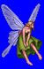
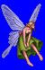
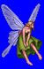
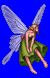

Height: 170 cm Weight: ???
Habitat: Forest, valley Origin: Europe
Meaning: The Latin "sylva" (forest, tree) + the Greek "nymph"
Sylphs are spirits of the wind and forest. They are said to have ageless, etherial beauty. Sometimes they are drawn with long, flowing hair and insect-like wings. In the Renaissance era, sylphs were thought to be an intermediate form between that of humans and spirits. It was also at this time that it became known as an air spirit in addition to a forest protector.
See also: Salamander